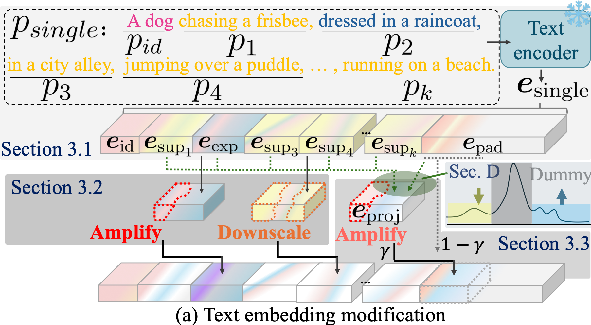
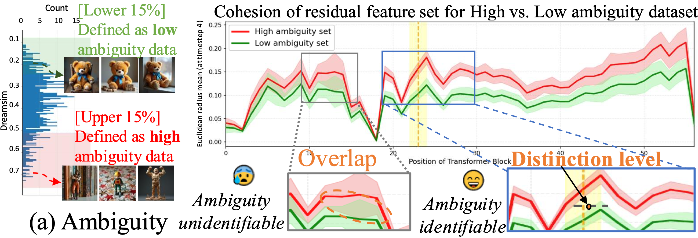
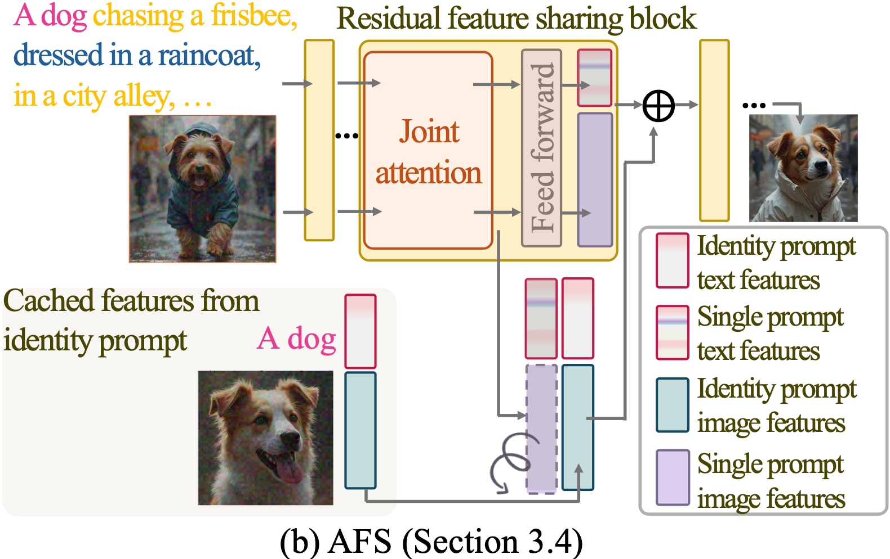

Abstract
Recent text-to-image diffusion models have significantly improved visual quality and text alignment. However, generating a sequence of images while preserving consistent character identity across diverse scenes remains challenging. Existing methods often face a trade-off between maintaining identity consistency and per-image prompt alignment.
In this paper, we introduce AsemConsist, a framework that resolves this trade-off through selective text embedding modification, enabling consistent identity preservation without degrading per-image prompt alignment. We further analyze the semantic structure of padding embeddings and find that, in multi-encoder backbones, only padding embeddings that retain prompt-related semantics can effectively serve as semantic containers. Based on this observation, we selectively inject per-image semantics into such padding embeddings while suppressing prompt-irrelevant components. Additionally, we propose an adaptive feature-sharing strategy that automatically evaluates identity specificity and selectively applies constraints only to ambiguous identity prompts.
Finally, we propose a unified evaluation metric called SeeSaw, which measures the balance between identity consistency and per-image alignment while evaluating whether identity and per-image prompts are equally reflected in generated images. Our method demonstrates superior performance over existing competitors when built upon SD3.5 and FLUX backbones, highlighting its effectiveness across different architectures and text encoders.
How does it work?
Selective text-embedding modification (STM)
Under the single-prompt setting, every per-image embedding is entangled with the identity: it carries components aligned with the shared identity as well as components that conflict with it. Prior single-prompt methods rescale all spectral components uniformly, so they amplify and erase both kinds at once. We instead decompose the embeddings with SVD, build a reference vector from the identity (and expression) embedding, and rescale only the components selected by their similarity to that reference — amplifying semantics shared by the identity and expression prompts while suppressing identity-irrelevant ones. The selection threshold is the mean similarity itself, so nothing has to be hand-tuned.
Padding embeddings as semantic containers (PAD). We additionally write per-image semantics into padding embeddings to strengthen prompt alignment. Our analysis shows that in multi-encoder backbones such as SD3.5, only OpenCLIP padding embeddings retain substantial prompt-related semantics, while CLIP and T5 padding is dominated by prompt-irrelevant “dummy” directions — so we use OpenCLIP padding alone as the container. FLUX relies on a single T5 encoder, where even dummy padding still influences generation and can therefore serve as a container as well.

Adaptive feature sharing (AFS)
When the identity description is detailed, embedding modification alone keeps the character consistent; highly ambiguous descriptions such as “a man” need an additional identity anchor. Existing methods share image features uniformly regardless of this distinction, needlessly constraining diversity for prompts that are already specific. We measure identity ambiguity from the spread of per-scene features — their mean distance from the centroid — at a single transformer block and timestep, calibrated once on a held-out prompt benchmark.

Calibration selects block 23 at step 4 of 28 for FLUX and block 25 at step 3 for SD3.5, reaching 96.7% accuracy (AUC 0.990) and transferring to real images. Only for prompts judged highly ambiguous do we cache features conditioned on the identity prompt alone and inject them during generation — residual features in FLUX, key–value features in SD3.5 — giving an architecture-agnostic identity anchor that engages only on demand.

Qualitative Comparison
Quantitative results
Ours attains the highest SeeSaw on both backbones, balancing per-image text alignment and identity consistency. Bold marks the best score and underline the second best.
| Model | SeeSaw ↑ | Per-image text alignment ↑ | Identity consistency ↓ |
|---|---|---|---|
| Vanilla SDXL | 0.481 | 0.619 | 0.400 |
| 1Prompt1Story | 0.391 | 0.442 | 0.281 |
| CoDi | 0.488 | 0.585 | 0.304 |
| Vanilla FLUX | 0.584 | 0.723 | 0.347 |
| CharaConsist | 0.519 | 0.637 | 0.368 |
| Zigzag | 0.661 | 0.796 | 0.309 |
| Ours (FLUX) | 0.664 | 0.786 | 0.281 |
| Vanilla SD3.5 | 0.636 | 0.820 | 0.367 |
| Ours (SD3.5) | 0.681 | 0.809 | 0.272 |
Ours (FLUX) reaches markedly better identity consistency than Zigzag (0.281 vs. 0.309) while being over 7× faster — 3.0–3.6 minutes per five-image set versus 26.1 minutes. 1Prompt1Story attains high identity consistency but substantially worse per-image alignment, as uniform rescaling suppresses per-image semantics together with identity-irrelevant ones.
Ablation study (SD3.5)
| SeeSaw ↑ | Per-image text alignment ↑ | Identity consistency ↓ | |
|---|---|---|---|
| (i) SD3.5 | 0.636 | 0.820 | 0.367 |
| (ii) SD3.5 + STM | 0.610 | 0.777 | 0.357 |
| (iii) SD3.5 + STM & PAD | 0.620 | 0.791 | 0.364 |
| (iv) SD3.5 + AFS | 0.606 | 0.772 | 0.320 |
| (v) Ours | 0.681 | 0.809 | 0.272 |
STM improves identity consistency without touching the identity embedding, PAD restores prompt alignment at a marginal identity cost, and AFS strengthens identity consistency. Combining all three yields the best SeeSaw: identity consistency improves by 0.095 over the baseline while alignment stays within 0.011 of the vanilla backbone.
Balanced Evaluation: SeeSaw
Existing protocols report identity consistency and per-image prompt alignment separately, typically with DreamSim and VQAScore. That separation never measures the trade-off between the two objectives. The alignment metric itself is also limited: VQA-based scores are right-skewed and saturate, so when the identity prompt is long, an image that ignores the per-image attributes — pose, background — can still score high.
SeeSaw addresses both issues. It balances identity consistency against per-image prompt alignment while explicitly testing whether the generated image faithfully reflects the per-image semantics.
Given an identity prompt \(p_{\mathrm{id}}\) and per-image prompts \(\{p_1,\dots,p_k\}\), let \(x_i\) be the image generated for \([p_{\mathrm{id}}, p_i]\). We measure prompt alignment with VQAScore and identity consistency with the DreamSim distance \(D(x_i,x_j)\) between images sharing \(p_{\mathrm{id}}\):
The \((1-\cdot)\) converts distance to similarity, and min–max scaling aligns its range with the VQAScores. To account for prompt representation imbalance, we compute the gap \(\Delta_i = a_i - t_i\): a positive \(\Delta_i\) means the per-image prompt is well represented, a negative value that it is under-represented.
We then aggregate identity consistency and prompt alignment as a harmonic mean, after correcting the identity term for that imbalance:
where \(\varepsilon>0\) ensures numerical stability, and the terms \(\mu\max(-\Delta_i,0)\) and \(\tau\max(\Delta_i,0)\) control the penalty and reward strengths. We set \(\mu=\tau=0.5\), assigning equal weight to penalty and reward.
By integrating identity consistency and per-image text alignment into a single metric and explicitly penalizing their imbalance, SeeSaw provides a balanced criterion for evaluating and ordering identity-consistent generation methods.
BibTeX
@article{kim2025asemconsist,
title={AsemConsist: Adaptive Semantic Feature Control for Training-Free Identity-Consistent Generation},
author={Kim, Shin Seong and Shin, Minjung and Cho, Hyunin and Uh, Youngjung},
journal={arXiv preprint arXiv:2512.23245},
year={2025}
}